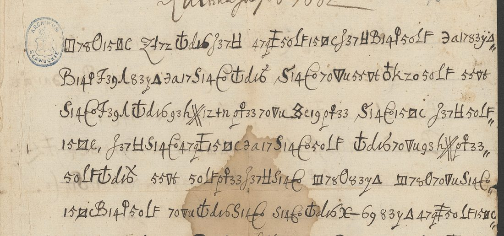

At a glanceCiphertext-only break · complete
- The letter
- An unsigned letter in Polish, dated “Ultima Julij A° 1662” in clear at the head, two pages, to a lord addressed as “MM Pan”. The writer is in a region “towards the sea” where the Elector of Brandenburg is expected.
- Where
- Kraków, Archiwum Narodowe, Archiwum Sanguszków, teka 134/8; DECODE R7513. Catalogue no. 443 here.
- The cipher
- A simple substitution: each letter is one composite group of three or four strokes (digits, letters, squares, triangles). 23 groups, no word division, the writer’s own stops and commas kept; a cross over a group makes ą.
- How it was deciphered
- Annealing on a Polish letter model recovered the key from the front (254 groups); the key was frozen and the held-out reverse (66 groups) decoded afterwards: 97% of its groups have a value and 86% of its letters fall in words of the Polish lexicon, against at most 58% for 200 permuted keys and 70% for 200 shuffled texts.
- What it says
- The Swedes are arming and have ordered prayers and a fast for the third time, which the writer takes for a sure sign of war; he advises against leaving “this side towards the sea” bare, since it is far from Lwów back to Gdańsk, and expects the Elector in August.
- Still open
- Nothing in the cipher text. Three words are probable and one letter is restored from the sense. A few clear words before “zdrowie” were left in clear by the writer and are not transcribed in full.
- Credit
- Brice Dudout (Europe chiffrée), working with Claude Opus 5.5: the atlas of the 23 groups, the break, the held-out test, the reading and the English translation, by email of 29 October 2026. To our knowledge the first published decipherment.
01 The letter
The letter is in the archive of the Sanguszko family at Kraków. It is unsigned; a few clear words near the end, “… MM Pan”, are a form of address, and neither sender nor recipient is named. The place of writing is not stated either. The contents point to the Baltic coast, and Prussia is a hypothesis, not a finding. The date is given in clear at the head, “Ultima Julij A° 1662”, the last day of July. DECODE holds two images, the front of 21 lines and the reverse of six, with no decipherment and no key.

02 The cipher
The system is a simple substitution with a very unusual alphabet. Each plain letter is written as a composite group made of a digit pair, a letter, a square, a triangle or a loop: ☐78O is t, 15☐c is e, 50lF is i, 83yΔ is o. There are 23 shapes, one for each letter the writer needs, with no homophones, no nulls and no nomenclator. The cipher has no signs for the Polish diacritics except a crossed group for ą, so the text is given in the spelling of the cipher. The shapes are in targets/asang1662/signs.md and the key in key.tsv (key K443).
03 How the key was found
The protocol. The atlas of the 23 groups was frozen before any computation, and a protocol was written and hashed. The front (21 lines, 254 groups) was kept for learning; the reverse (six lines, 66 groups) was held out and not decoded before the key was frozen.
The break. The substitution was solved by simulated annealing on a Polish letter model. Latin, French, German and Italian models scored clearly lower, and the Polish text read at once. Two values were corrected from the reading of the front alone (g and k).
The held-out reverse. One measurement was made on the reverse: 97% of its groups have a value and 86% of its letters fall in words of the Polish lexicon, with the segmentation fixed in advance. The 200 keys with permuted values reach at most 58%, and 200 shuffled texts at most 70%. The reverse is short; Brice Dudout says so. Two groups occur only there (Ꝑt33, a variant of the u group, and Mig4, f from the sense).
The statistical check here. The project’s validator (docs/_validate.py) scores the reading of 320 groups (24 types) with a four-gram model of Polish of about 1790, as mean log-probability per letter. The reading scores −2.575; random keys of the same shape −5.447 on average (z 10.1); a key annealed onto the shuffled ciphertext −3.785 at best; and the same annealer, started from random keys on the real text, reaches −2.865. Verdict: pass.
04 The reading
Brice Dudout’s text in the spelling of the cipher. {x} probable; [x] restored from the sense. The clear words left by the writer between “Sam” and “zdrowie” are not counted.
Te nas wiesci dochodza z Rygiy y z Hamburku, ze sie Szwedzi armuią y iusz to trzeci raz zapowiedzie[i]li modlitwy y post. Co nieomylnie iest znakiem, ze woyne meditantur, y ze {kogs} zagabną.
Ia radze, zeby tey sciany ku morzu nie zostawowac ogoloconey, bo daleko z pod Lwowa bedzie do Gd. anska sie wracac.
Sam [… MM Pan] zdrowie swoie miey na pieczy y nie kozdem{u} duchowi wierz. Cur{f}irst pewnie tu ma bydz in Augusto.
These are the news that reach us from Riga and from Hamburg: the Swedes are arming, and this is already the third time they have ordered prayers and a fast. That is the unfailing sign that they are contemplating war and will attack someone.
I advise that this side, towards the sea, should not be left bare: it would be a long way to come back from beneath Lwów to Gdańsk.
You yourself, [… my Lord,] take care of your health, and do not believe every spirit. The Elector will surely be here in August.
Brice Dudout’s notes place the letter in 1662. Sweden held Riga and Livonia under the Peace of Oliva (1660), and the writer reads the public prayers and fasts ordered there as the herald of a war. The Crown army was in the south-east, around Lwów, where the confederation of unpaid soldiers (1661–1663) held the country, hence the advice not to strip the side towards the sea (Royal Prussia, Gdańsk). “Kurfirst” is the Elector of Brandenburg, Frederick William, duke in Prussia, who came to Königsberg in the autumn of 1662 to bring the Prussian estates to heel. “Do not believe every spirit” is 1 John 4:1, nie każdemu duchowi wierzcie in the Wujek Bible (1599), a warning against false rumours. The full text and translation are under Full texts below.
05 What remains uncertain
- {kogs}: the letters are certain; it is taken as kogoś (someone), written short. A proper name is not excluded (probable).
- kozdem{u} and Cur{f}irst, on the reverse: two groups occur only there and were not in the key drawn from the front. Ꝑt33, a variant of the u group, gives u; Mig4 gives f from the sense, Curfirst = Kurfürst (probable).
- zapowiedzie[i]li: one group is partly covered by an ink blot; place and sense give i (restored from the sense).
- The clear words between Sam and zdrowie (“… MM Pan”) were not transcribed in full (uncertain reading) and are not counted.
- Where the writer was, and who wrote and received the letter, remain unknown; the place is Prussia only as a hypothesis.
Full texts
The transcription and the decryption of every document on this page, so that the reading can be used and checked. Short files are shown here; all are in the repository.
Anonymous letter, 31 July 1662, front and reverse
News from Riga and Hamburg that the Swedes are arming and have ordered prayers and a fast for the third time, a sure sign of war; advice not to leave the side towards the sea bare, since it is far from Lwów to Gdańsk; the Elector will surely come in August.
Transcription
# Kraków, Archiwum Narodowe, Archiwum Sanguszków, teka 134/8: anonymous letter, "Ultima Julij A° 1662" (31 July 1662). # DECODE R7513 (https://de-crypt.org/decrypt-web/RecordsView/7513); images not included (DECODE terms). # One composite sign group = one code letter A-W (see signs.md). "." and "," = the cipher's own punctuation; "?" = group under an ink blot. # Front (DECODE image P2), lines 1-21 = learning text; reverse (image P1), lines V1-V6 = held-out text. front L01 A B C D E F G B E H G I J front L02 H K J I L D L P Q R G Q front L03 L K D M N O P S O L B E G front L04 B , E L F B I L G D P M O front L05 G D Q G O E L A J A P L front L06 B H G P D L L D T J F G B front L07 I L G B U ? M J I U G A F Q front L08 Q T J E A . H J C G B J front L09 M Q U C G B G B E A L C front L10 D S G B M L B F J Q C B . front L11 M B I G A D C A O P , Q L B front L12 S J R E L D R D N C D . front L13 G D P D I L B L B N Q front L14 A B Q E H G D C Q S O front L15 M J P L O C G B L J E A D front L16 F J F D H J R J U J H J front L17 C B Q , N J I D U B S J L T front L18 J I U F J F D N B I L G B front L19 I J R I . D C E S D E G B F front L20 P D H D H . E D M [PLAIN: ... MM Pan] front L21 L I P J F G B E F J G B . reverse V1 M G B Q C D T G B H L Q reverse V2 Q C G B S J L I B M O2 I O reverse V3 H K J F G F G B P L . reverse V4 H O P W G P E A T B F C reverse V5 G B A O M D N Q I L . reverse V6 G C D O R O E A J .
Decryption
# Group-by-group decryption with key K443 (frozen before the held-out measurement). O2 = u, W = f and ? = i are read from the sense. ## front L01 A B C D E F G B E H G I J tenaswiescido ## front L02 H K J I L D L P Q R G Q chodzazrygiy ## front L03 L K D M N O P S O L B E G zhamburkuzesi ## front L04 B , E L F B I L G D P M O e,szwedziarmu ## front L05 G D Q G O E L A J A P L iayiusztotrz ## front L06 B H G P D L L D T J F G B ecirazzapowie ## front L07 I L G B U ? M J I U G A F Q dzielimodlitwy ## front L08 Q T J E A . H J C G B J ypost.conieo ## front L09 M Q U C G B G B E A L C mylnieiestzn ## front L10 D S G B M L B F J Q C B . akiemzewoyne. ## front L11 M B I G A D C A O P , Q L B meditantur,yze ## front L12 S J R E L D R D N C D . kogszagabna. ## front L13 G D P D I L B L B N Q iaradzezeby ## front L14 A B Q E H G D C Q S O teyscianyku ## front L15 M J P L O C G B L J E A D morzuniezosta ## front L16 F J F D H J R J U J H J wowacogoloco ## front L17 C B Q , N J I D U B S J L T ney,bodalekozp ## front L18 J I U F J F D N B I L G B odlwowabedzie ## front L19 I J R I . D C E S D E G B F dogd.anskasiew ## front L20 P D H D H . E D M [PLAIN: ... MM Pan] racac.sam[PLAIN: ... MM Pan] ## front L21 L I P J F G B E F J G B . zdrowieswoie. ## reverse V1 M G B Q C D T G B H L Q mieynapieczy ## reverse V2 Q C G B S J L I B M O2 I O yniekozdemudu ## reverse V3 H K J F G F G B P L . chowiwierz. ## reverse V4 H O P W G P E A T B F C curfirstpewn ## reverse V5 G B A O M D N Q I L . ietumabydz. ## reverse V6 G C D O R O E A J . inaugusto.
Reading
# Established text (Polish, spelling of the cipher)
Conventions: {x} probable; [x] restored from the sense. The cipher has no signs for the Polish diacritics except a crossed a (ą); they are not added.
Te nas wiesci dochodza z Rygiy y z Hamburku, ze sie Szwedzi armuią y iusz to trzeci raz zapowiedzie[i]li modlitwy y post. Co nieomylnie iest znakiem, ze woyne meditantur, y ze {kogs} zagabną.
Ia radze, zeby tey sciany ku morzu nie zostawowac ogoloconey, bo daleko z pod Lwowa bedzie do Gd. anska sie wracac.
Sam [… MM Pan] zdrowie swoie miey na pieczy y nie kozdem{u} duchowi wierz. Cur{f}irst pewnie tu ma bydz in Augusto.
## Modern Polish reading (for reading only)
Te nas wieści dochodzą z Rygi i z Hamburga, że się Szwedzi zbroją i już to trzeci raz zapowiedzieli modlitwy i post. Co nieomylnie jest znakiem, że wojnę meditantur [rozważają], i że kogoś zagabną.
Ja radzę, żeby tej ściany ku morzu nie zostawiać ogołoconej, bo daleko z pod Lwowa będzie do Gdańska się wracać.
Sam [… MM Pan] zdrowie swoje miej na pieczy i nie każdemu duchowi wierz. Kurfirst pewnie tu ma być in Augusto [w sierpniu].
## State of the reading
First published decipherment, to our knowledge. 320 groups, 71 words. Published under Daniel Bourdeau’s rule: 95% of words read as sense, counted on the enciphered part only. Here: 71 of 71 words read as sense (100%): 67 certain (94.4%), 3 probable (4.2%), 1 restored from the sense (1.4%), 0 unresolved. Reasons in the notes.Translation
# English translation These are the news that reach us from Riga and from Hamburg: the Swedes are arming, and this is already the third time they have ordered prayers and a fast. That is the unfailing sign that they are contemplating war and will attack someone. I advise that this side, towards the sea, should not be left bare: it would be a long way to come back from beneath Lwów to Gdańsk. You yourself, [… my Lord,] take care of your health, and do not believe every spirit. The Elector will surely be here in August.
Key: key.tsv
06 Sources
- Kraków, Archiwum Narodowe, Archiwum Sanguszków, teka 134/8: DECODE R7513, two images from the Archiwum Narodowe w Krakowie (restricted: a detail is shown with credit).
- Brice Dudout, Europe chiffrée: the Sanguszko letter of 1662 (2026): transcription, key, text and translation.
- No printed edition and no earlier decipherment found (research/polish_archives; search on the plaintext phrases, 29 October 2026).
Folder: targets/asang1662/ (notes, transcription, signs, key, decryption, reading and translation, as contributed by Brice Dudout).